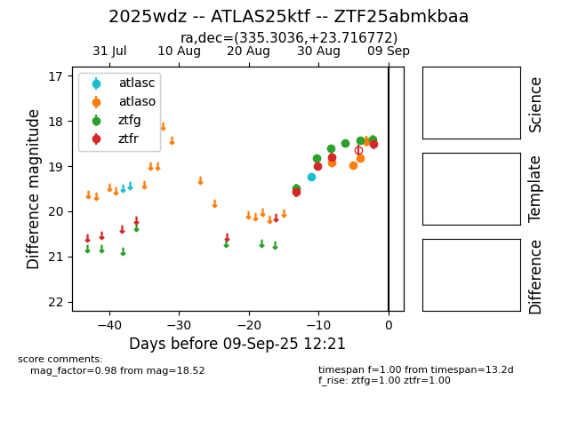

FINK: ZTF25abmkbaa
Lasair: ZTF25abmkbaa
ALeRCE: ZTF25abmkbaa
TNS: 2025wdz
YSE: 2025wdz
ZTF25abmkbaa (ztf,fink)
2025wdz (tns,yse)
ATLAS25ktf (atlas)
equatorial (ra, dec) = (335.3036,+23.71677)
galactic (l, b) = (83.9230,-27.55211)

last atlasc=18.79, atlaso=18.84, ztfg=18.61, ztfr=18.63
4 atlasc, 8 atlaso, 10 ztfg, 8 ztfr detections